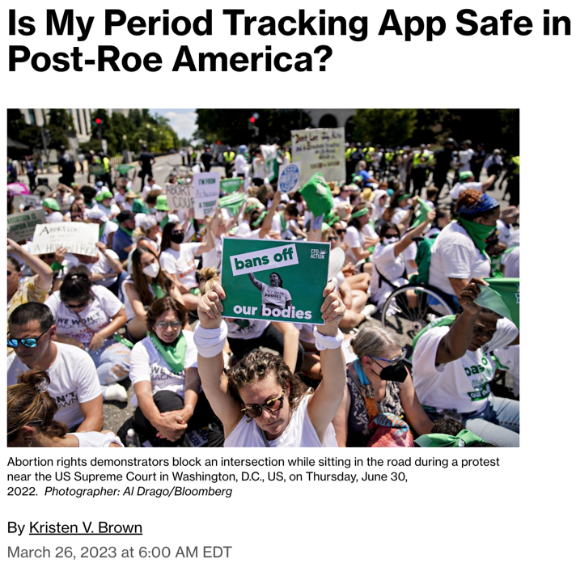
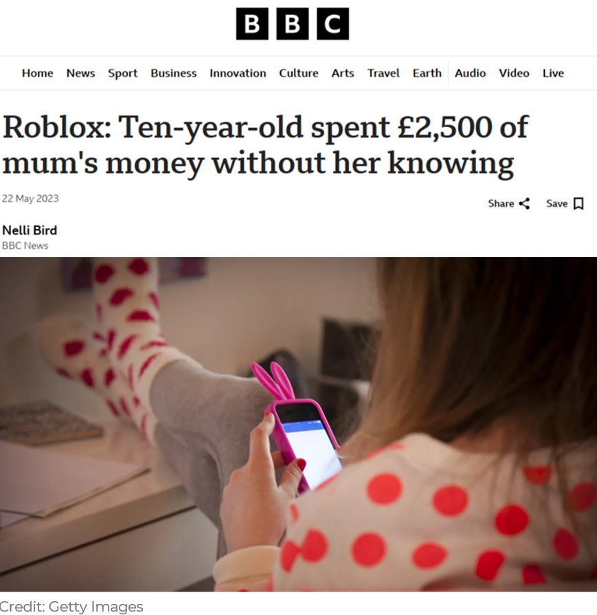
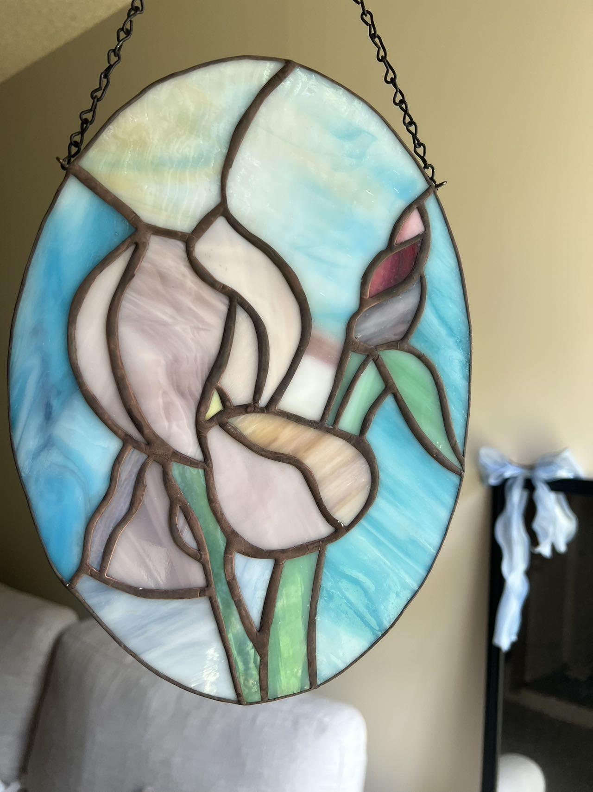
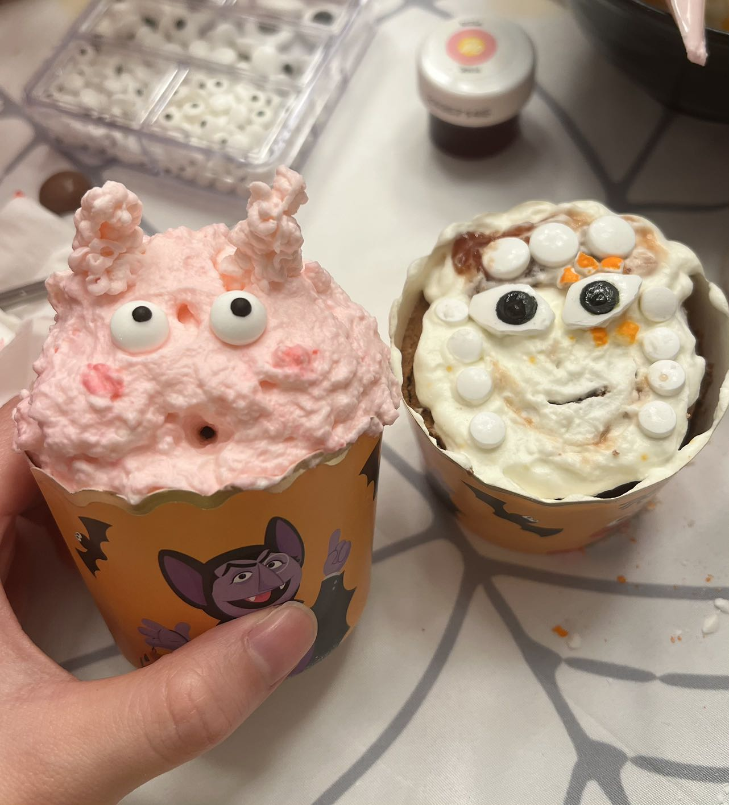
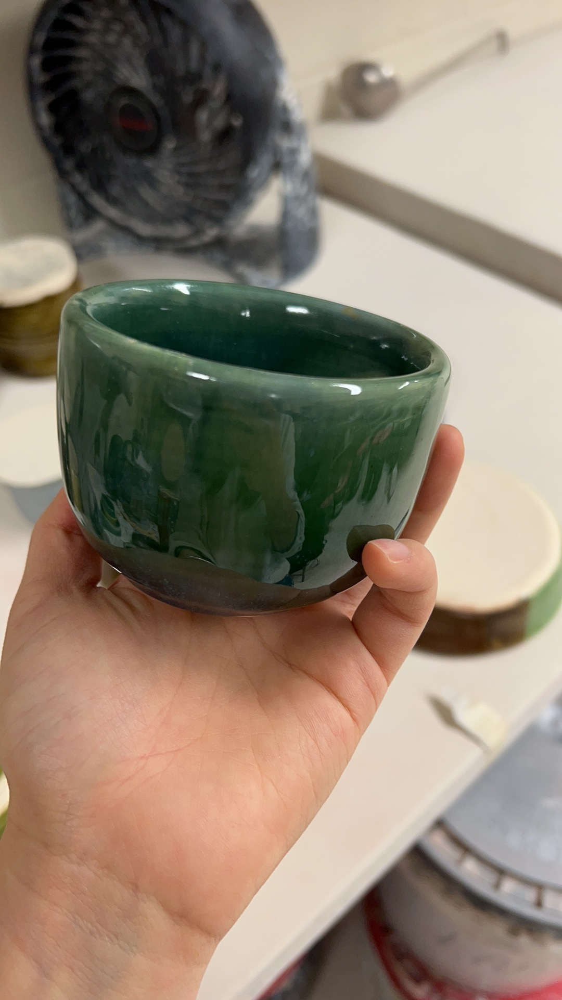
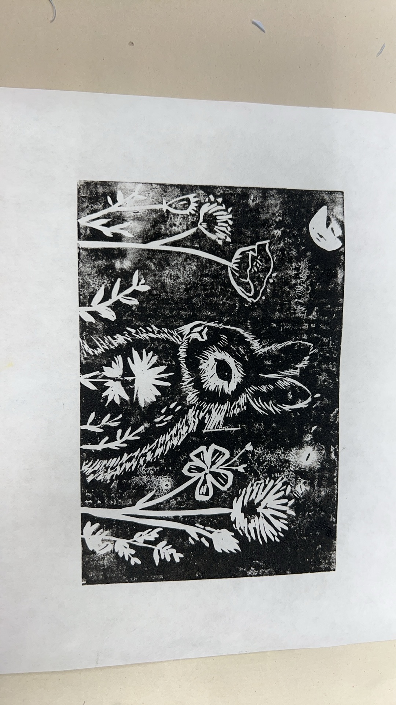

Ph.D. candidate · Penn State
Hi, I’m Qiurong.
I’m a Ph.D. candidate in Informatics at Penn State. I’m part of the Health and Play Lab, luckily advised by Dr. Xinning Gui and Dr. Yubo Kou.
My research lies at the intersection of Human–Computer Interaction (HCI) and Security and Privacy (S&P). I investigate how everyday digital technologies shape the privacy and security risks faced by at-risk users and design sociotechnical solutions that enhance online safety, privacy, and autonomy. In particular, my work explores how women and people with uteruses, children, and content creators navigate privacy and security challenges in contexts such as reproductive health technologies (e.g., CHI 2024, CSCW 2024, CHI 2025, IEEE S&P 2026) and game ecosystems (e.g., SOUPS 2025, USENIX Security 2026, and CCS 2026).
Usable privacy & security
Research

Health data privacy
Usable privacy in reproductive health technologies
This line of work examines how at-risk populations—particularly women and people with uteruses—navigate privacy and security challenges in reproductive health technologies such as period and fertility tracking apps.
Through a series of studies, I explore how users, companies, and legal infrastructures shape the reproductive privacy landscape: how people interpret changing risks, how companies communicate privacy commitments, and how design can strengthen both usability and privacy protection.

Online safety
Safety by platform design in game ecosystems
I study how platform design and governance shape safety and security in game ecosystems where young users participate as both players and creators. My studies focus on Roblox to understand how children and game creators navigate risks and responsibilities.
This work examines harmful design practices, including predatory monetization, children’s risk assessment, creators’ coping practices, and child-centered safety mechanisms. It informs designs that better protect young users’ safety, financial wellbeing, and digital autonomy.
News
- Nov 2026My first-authored IEEE S&P 2026 paper, “Usable Anonymity in Reproductive Health Privacy,” received the Best Social Impact Award at the CSAW Applied Research Competition! Selected by a judging panel composed primarily of industry experts, the award recognizes the work’s potential social impact and practical relevance to reproductive health privacy. Details.
- Aug 2026One full paper was accepted to CCS 2026!
- Aug 2026Invited to serve as an Associate Chair (AC) for CHI 2027, Full Paper Track!
- Apr 2026Received the First Place of Graduate Research Excellence Award from the Department of Human-Centered Computing and Social Informatics (HCCSI), Penn State College of IST!
Earlier news
- Apr 2026Received the Runner-Up Ph.D. Award for Research Excellence from Penn State College of IST!
- Jan 2026Two full papers were conditionally accepted to CHI 2026—one of them being my first-authored paper!
- Dec 2025My first-authored full paper was accepted to USENIX Security 2026!
- Sept 2025My first-authored full paper was accepted to IEEE Symposium on Security and Privacy (S&P 2026)!
- Aug 2025Our research was featured by Penn State News!
- July 2025Invited to serve on the Program Committee for the Full Papers Track at GROUP 2027!
- May 2025Began my role as Assistant to the Paper Chairs for CHI 2026!
- Mar 2025Presented a poster at Penn State's Graduate Exhibition!
- Jan 2025My first-authored full paper accepted to CHI 2025!
- Dec 2024Invited to serve on the CHI 2025 Late-Breaking Work (LBW) Program Committee!
- Aug 2024Elected Vice President of GIST (Graduate Students Assoc in IST)!
- July 2024Awarded a scholarship to attend the Grace Hopper Celebration 2024!
- Apr 2024Invited to serve on the Program Committee for GROUP 2025!
- Apr 2024Successfully proposed my dissertation and passed the comprehensive exam—now officially ABD!
Publications
Acceptance rates are overall paper-track rates for the corresponding year, if available.
Conference Publications
12-
[C11] Usable Anonymity in Reproductive Health Privacy
Proceedings of the 47th IEEE Symposium on Security and Privacy, pp. 3627–3646. PDF
CSAW 2026 Best Social Impact Award
-
[C7] How Predatory Monetization Designs Manifest in Child-Friendly Video Games
Proceedings of the Twenty-First Symposium on Usable Privacy and Security, pp. 515–534. PDF
Journal Publications
4CSCW and CHI PLAY full papers are archival journal articles published in PACMHCI and presented at their associated conferences.
Doctoral Consortium & Posters
2Curriculum vitae
| Document | Access |
|---|---|
| Curriculum vitaeCurrent version |
Beyond research
Outside research, I enjoy swimming, reading novels, playing video games (I love Final Fantasy! Recently, I’ve also enjoyed playing Untitled Goose Game ), and making small art and craft projects. Here are a few photos of things I’ve made and moments I enjoy 😊🌸✨




College of Information Sciences and Technology
Penn State University
University Park, PA 16802